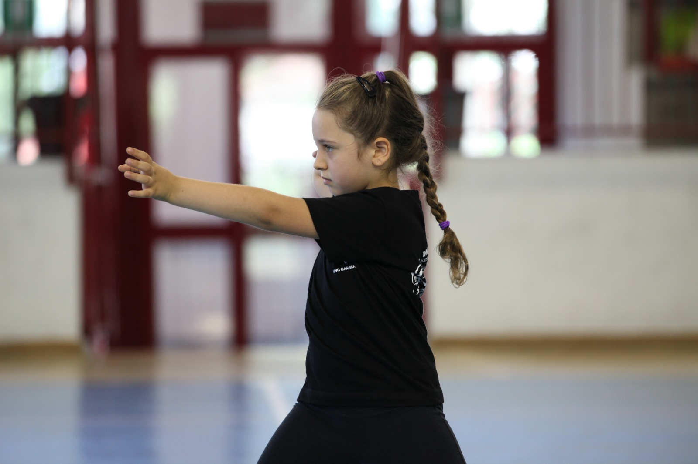
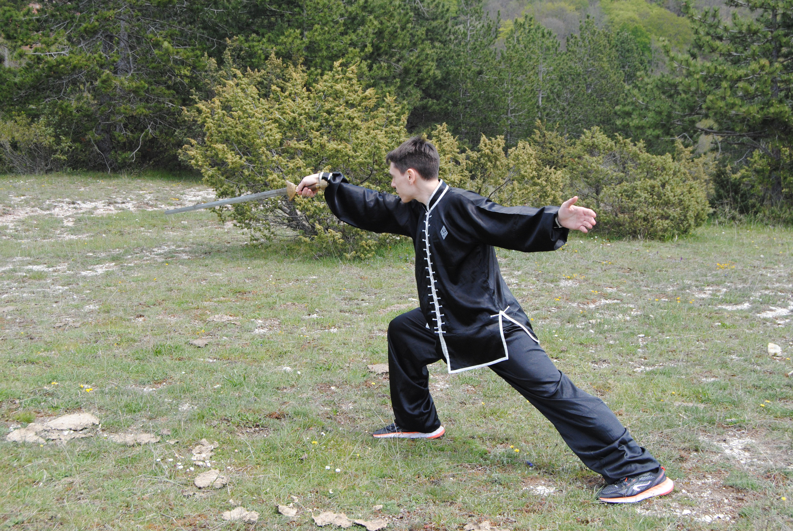
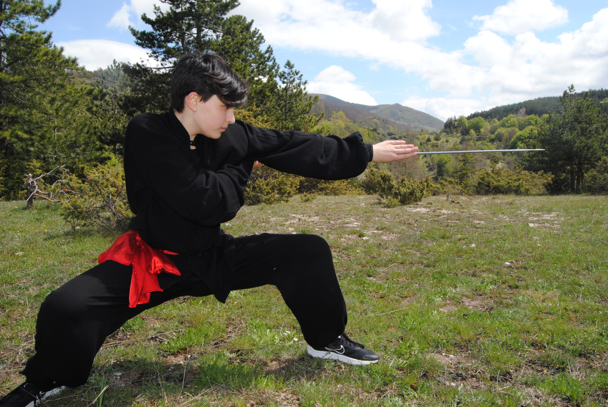
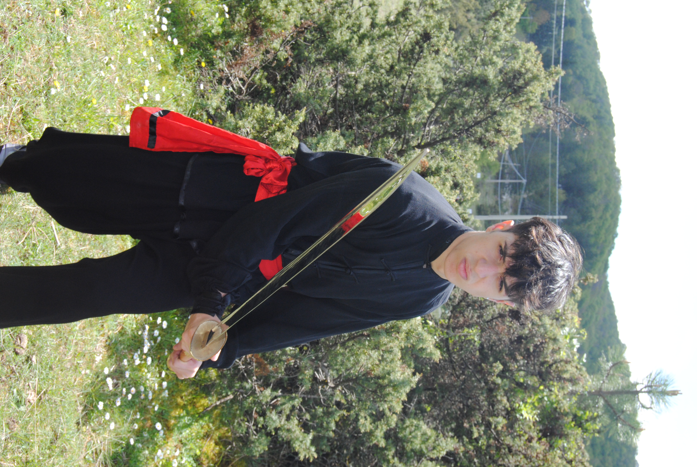
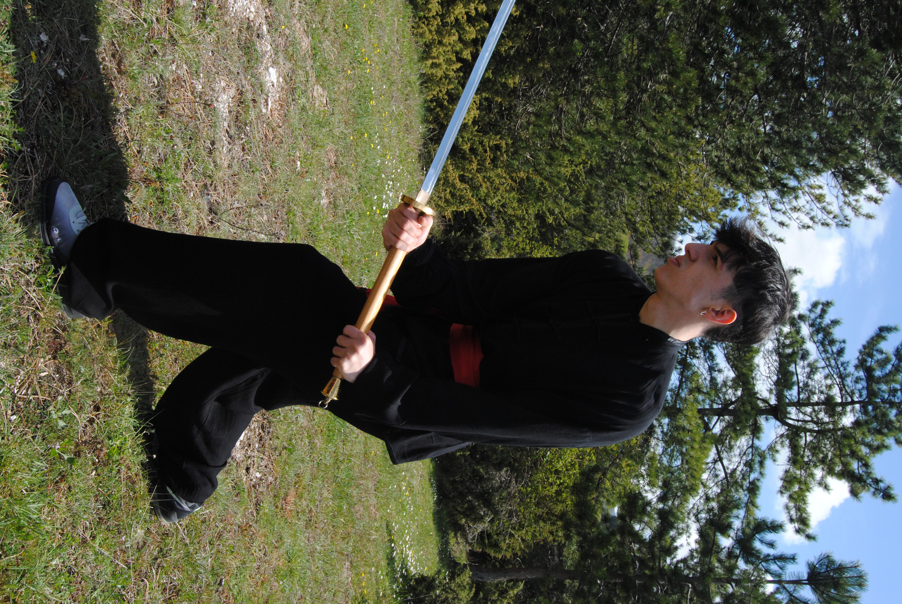

Lo stile HUNG GAR, detto anche HUNG KUEN, nasce intorno al XVII secolo nel monastero SHAOLIN del SUD e si diffonde rapidamente in tutta la CINA meridionale per il suo modo rivoluzionario di combattere e per l'intersecarsi della sua storia. L'ipotesi più accreditata sembra essere quella secondo cui lo stile HUNG GAR deve il suo nome al suo fondatore, un semplice e giovane commerciante di thé di Kan Ton, HUNG NEI KWUK, il quale dopo essere stato costretto ad abbandonare la sua professione a causa dei conflitti con alcuni nobili CHING, immigrò nella vicina regione di FUK KIEN, dove conobbe l'allora abate del MONASTERO SHAOLIN del NORD, TI SIN SHIN, che lo scelse come suo allievo prediletto.
Purtroppo il Monastero dello SHAOLIN del NORD venne distrutto dai CHING a causa della sua non sottomissione al nuovo potere. Dopo la sua distruzione, il Monastero SHAOLIN del NORD venne ricostruito ma non ritrovò più lo splendore di un tempo, a differenza del Monastero dei FUK KIEN (Shaolin del Sud) che, nonostante la sua devastazione, venne ricostruito e ritornò a prosperare dando la luce ai 4 GRANDI STILI della Cina del Sud: HUNG KUEN, LAO GAR KUEN, LEI GAR KUEN, MO GA KUEN.
TI SIN SHIN insegnò ai suoi monaci ed al suo allievo prediletto HUNG lo Studio degli ANIMALI, esercizi ginnici volti a potenziare la virtù fisica, quella interiore ed il sistema di combattimento. HUNG si specializzò in particolare nello studio della TIGRE e della GRU, dettagli che ritroviamo appunto nell'HUNG GAR, in cui molte delle tecniche in uso sono ispirate a questi due animali, anche se non mancano cenni tecnici ispirati al Serpente, al Drago ed al Leopardo.
L'HUNG GAR viene rappresentato principalmente da 2 animali: la GRU, come eleganza ed equilibrio (YIN) e la TIGRE, come forza, energia ed espressione (YANG). Inizialmente lo stile HUNG GAR venne divulgato nelle regioni intorno alla città di KAN TON (Hunan-Fuk kien) e solo successivamente si espanse a tutto il Sud della Cina, influenzando inoltre le arti marziali dell'isola di OKINAWA.
Ogni Maestro, per continuare a garantire nei secoli la diffusione del KUNG FU, era solito tramandare le sue conoscenze ad un suo allievo, solitamente il più degno, al quale veniva delegato l'insegnamento dello stile. Uno di questi era WONG FEI HUNG, il quale creò una combinazione di colpi conosciuta oggi come SUP YIN KUEN (pugno delle 10 forme) che consiste in un insieme di tecniche ricavate da almeno 10 stili diversi.
Nello stile HUNG GAR si predilige l'uso delle braccia, le posture vantano di grande stabilità e le tecniche di grande potenza. Lo stile viene tramandato di generazione in generazione, da Maestro a Maestro, per garantire la continuità nella tradizione del KUNG FU attraverso secoli di storia, di leggenda, di amorevole dedizione da parte di coloro i quali hanno fatto di questa splendida arte non solo una tecnica di combattimento ma anche una dottrina di vita.

